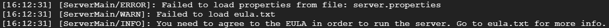
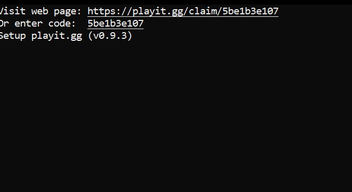

Warning: This tutorial is for advanced Linux users only. Please make sure you know what you are doing before you follow this tutorial.
Before we start, make sure that: you have a Linux terminal ready; your PC is connected to the internet; you have at least 10GB free disk space.
So, let's start!
Step 1: Installing Java
Run these commands ONE BY ONE. DO NOT PRESS CTRL+C. Ignore the lines that start with # .
sudo apt update sudo apt install -y libc6-x32 libc6-i386 wget https://download.oracle.com/java/18/latest/jdk-18_linux-x64_bin.deb sudo dpkg -i jdk-18_linux-x64_bin.deb sudo update-alternatives --install /usr/bin/java java /usr/lib/jvm/jdk-18/bin/java 1 verify installation (optional) java -version
Java installation is finished. Now we can download the Minecraft server.jar file.
Run these commands one by one.
cd
mkdir MinecraftServer
cd MinecraftServer
wget https://piston-data.mojang.com/v1/objects/f69c284232d7c7580bd89a5a4931c3581eae1378/server.jar
java -Xmx1024M -Xms1024M -jar server.jar nogui
Now, you could say we're done. But, there's still something to do, so people from another network can join your server.
This is what you should see in your terminal:
So let's fix that.
Run this command:
nano eula.txt
Use the arrow keys to move your cursor.
Change eula=false to eula=true
Then, press ctrl+x , y and enter.
Then, try starting your server again:
java -Xmx1024M -Xms1024M -jar server.jar nogui
This time, the server should start.
Setting up playit (ngrok, but with a permanent address)
Click here. Once in the website, create an account like you normally would in any other website.
Once you're logged in, on the right, click "Add Tunnel".
In your terminal, type "ifconfig | grep "inet " | grep -Fv 127.0.0.1 | awk '{print $2}'" to find your computer's IP address.
After running that command, you should see 2 lines in the terminal. The second one is your server's IP.
In the playit website, once you clicked add tunnel, select "custom" for tunnel type, and click next.
For local IPv4, enter your server's IP.
For local port, put 25565.
Port type, select TCP. Port count = 1.
Click create tunnel, and it's done.
Now, you need to install playit on your server. Run these commands:
# For Debian & Ubuntu based systems
curl -SsL https://playit-cloud.github.io/ppa/key.gpg | sudo apt-key add -
sudo curl -SsL -o /etc/apt/sources.list.d/playit-cloud.list https://playit-cloud.github.io/ppa/playit-cloud.list
sudo apt update
sudo apt install playit
After you finish running the commands, type playit into your terminal. If you did everything correctly, you should see this:
Open the link next to where it says "Visit web page", and click "Allow" in the website that opens up.
Open another terminal window, and run these commands: (If you're using Ubuntu Server as the main OS, press Alt+F2 to open another window. To go back to the previous one, press Alt+F1. --- If you're on WSL, simply open another cmd window and type ubuntu. That's the same thing as opening a new terminal window.)
cd cd MinecraftServer java -Xmx1024M -Xms1024M -jar server.jar nogui
Tip: You can mess around with the numbers in -Xmx1024M and -Xms1024M. That's the amount of RAM your server can use (In MB. 1GB = 1000MB. For example, if your server has 8GB RAM installed, you have to leave at least 2GB for the OS itself to run. The rest can go for the server. For example, our server has 5GB RAM installed. Since the main OS is Ubuntu Server, it doesn't require too much RAM to run, so we allocated 4GB RAM to the Minecraft Server.)